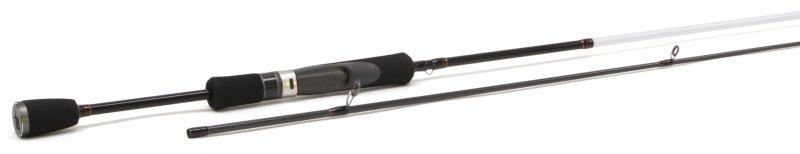

| Главная Каталог Контакты | ||||||||||||
|---|---|---|---|---|---|---|---|---|---|---|---|---|
Спиннинг Рыболов-Олта Навахо 792F-SОписание товараУдилище 792F-S предназначенное для ловли рыбы |
||||||||||||
|
||||||||||||
Подробное описание товараМодель удилища 792F-S предназначена для ловли на легкие приманки, вес которых находится в пределах от 0,5 до 5,5 гр. Строй Fast достаточно универсален, с его помощью можно выполнять проводку воблеров и силиконовых приманок. Для изготовления бланка применяется материал Т40. Это карбон, при помощи которого удалось добиться минимального веса и высокой прочности, а также гибкости. Все эти характеристики очень важны для спиннинговой ловли. Длина модели 792F-S составляет 237 см при массе в 96 гр. Для изготовления рукояти применяется материал ЭВА. С его помощью хват становится более уверенным. Кольца SiC широко применяются разными производителями из-за их прочности и небольшого веса. Кроме того, они снижают трение при выполнении заброса, поэтому его дальность возрастает, а срок работы плетеного шнура продлевается. |
||||||||||||